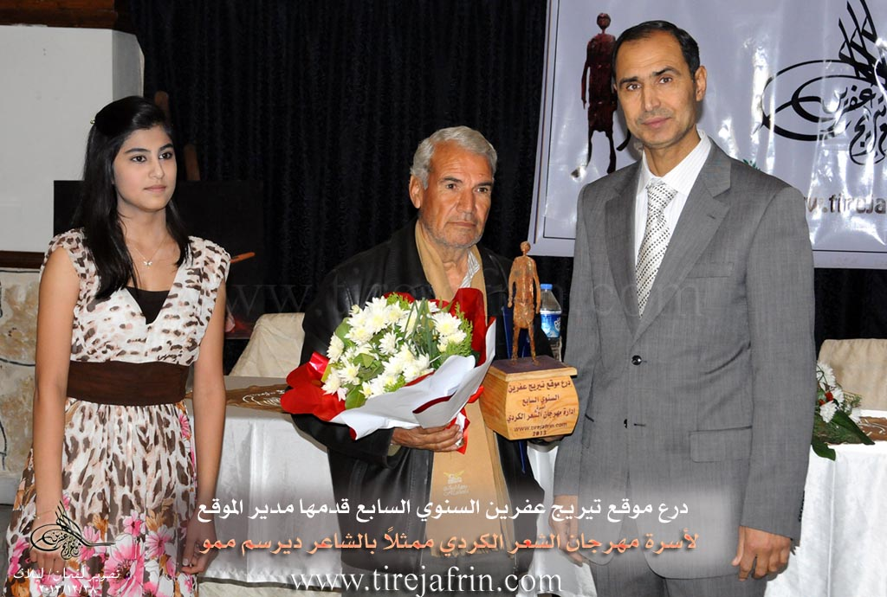

General Information
Nahiya (Subdistrict)
Efrîn
Also Known As
Keferdelê, Keferdelê Jorin, Keferdelê Jorîn, Keferdelê jorin, Kefirdellê, Kefr Dalî, كفردلي فوقاني, Keferdela Jûrin
Tribes
Cês
Families, Clans, etc.
Beker Axa, Elî, Elî Îse, Erdo, Genco, Gênco, Hemûdê Fadlî, Mamed, Mistefê Îsmaîl, Qedûr, Taka, Teke, Çolaq, Îbiş, Şe'a, Şiêr

Photos



Basic Information about Keferdelê Jorin
Source: Ax û Welat (Information for Keferdelê Jêrîn and Keferdelê Jorin)
Etymology: From Aramaic/Syriac where Kefer means village, translating to Gundê Delê
Foundation Date/Period: Approximately 400 to 500 years ago
Caves: Şikefta Govşka Zeytûna, Şikefta Ga
Number of Caves: 30
Hills: Çiyayê Hemdû, Çiyayê Elî Îsa
Shrines: Şêx Ûzim
Trees: palot
Summaries
I. Summary from TirejAfrin Site (English) of Keferdelê Jorin
Source: https://www.tirejafrin.com/site/kura%20afrin%20markaz-%20Keferdele%20jorin.htm
The book جبل الكرد (عفرين) دراسة جغرافية Çiyayê Kurmênc (Efrîn): A Geographical Study by د. محمد عبدو علي Dr. Mihemed Ebdo Elî states regarding Keferdelê Jorîn:
Keferdelê: The name is a compound of Kefer + Delê. We have not arrived at the literal meaning of the name, although "Delê" is a Turkish word meaning reckless or mad, and "Kefer" is a Syriac Greek term meaning farm.
It is a small village located on the two sides of Geliyê Bîrê (Valley of the Well), which slopes steeply from the north toward the south. Its location is fortified, and it is overlooked from its four sides by limestone mountain slopes. It is one of the old villages in the region.
The book عفرين .... نهرها وروابيها الخضراء Efrîn... Her River and Her Green Hills by the writer عبدالرحمن محمد Ebdulrehman Mihemed from the village of Qetme states regarding Keferdelê Jorîn:
It is a village in Çiyayê Kurmênc, administratively belonging to the villages of the central Efrîn subdistrict and region, in the Aleppo governorate. It is a large village situated on the western and southern slope on the side of Geliyê Bîrê, which slopes from the north to the south. It is overlooked by limestone mountain slopes carved by watercourses from the southern side and the eastern side, and the village lies between two mountains in a deep depression.
It is bordered to the north by a valley, a mountain chain, and the village of Gazê Tepê. To the south, it is bordered by a valley, a fertile plain of olive trees, and the village of Keferdelê Jêrîn. To the west, it is bordered by a mountain chain and the village of Satiyanlî. To the east, it is bordered by a mountain chain planted with olive trees, slopes, and the villages of Me'rratê and Babîlît.
The number of its houses reaches approximately 80 houses, and its age is about 500 years. Its old houses are of stone and mud with flat wooden roofs, while the modern dwellings are made of stone and cement. The village has an electrical network and a primary school founded in 1947. The residents drink from artesian wells, and water collects in cisterns. Its inhabitants work in the cultivation of olives, grains, and legumes, and in raising sheep and goats. The road connecting to it from the Darê junction to the village is a paved dirt road.
Among the families in the village are: Beker Axa (Mihemed Kînc), Şe'a, Taka, Mamed, and Elî Îse.
In the past, Mr. Mihemed Ebdullah, the father of Dr. Xelîl Ebdullah, was the mukhtar of this village. Currently, Mr. Faîq Îbiş is the mukhtar of the village.
There are many university degree holders, and among the cultural and scientific figures in the village are, for example but not limited to: Mr. Azad Ebdulhenan (a well known mathematics teacher in the region), Mr. Ehmed Kînc, and the poet Mihemed Şêx Osman Hemdo (Dêrsim Memo). Among the holders of higher degrees in the village is Ebdulrehman Xelîl Îbiş (PhD in Aviation Mechanics / Russia).
Village Mukhtar: Faîq Îbiş
Sources:
- Book: جبل الكرد (عفرين) دراسة جغرافية Çiyayê Kurmênc (Efrîn): A Geographical Study by د. محمد عبدو علي Dr. Mihemed Ebdo Elî.
- Book: عفرين .... نهرها وروابيها الخضراء Efrîn... Her River and Her Green Hills by عبدالرحمن محمد Ebdulrehman Mihemed from the village of Qetme.
Preparation and Execution:
- Director of Tirej Efrîn site: Ebdulrehman Hacî Osman
- 20/12/2013
II. Summary of Keferdelê Jêrîn and Keferdelê Jorin from Ax û Welat
Source: https://www.youtube.com/watch?v=ntK5ucTs_TE
The village of Keferdelê is a historic settlement in the Efrîn region that consists of two distinct sections known as Keferdeleya Jorin and Keferdeleya Jêrîn. Residents explain that the name has Aramaic origins where the word Kefer signifies a village making the meaning Gundê Delê. The history of the settlement spans between four and five centuries. Originally Keferdeleya Jêrîn served merely as an agricultural mezra or farm for the upper village before the population expanded the cultivated land and established a permanent presence there. The geography is defined by Çiyayê Hemdû to the east and north and Çiyayê Elî Îsa to the south.
The social structure and reputation of Keferdelê are deeply tied to education and intellectual achievement. The village is famous for having a high density of university graduates including over 110 professionals such as doctors and engineers. This legacy began with Heyder Gênco who is celebrated as the first teacher in the Efrîn region. In 1947 he established a school that served students from seven surrounding villages including Satya and Gewrika and Çolaqa. Before the construction of this formal schoolhouse education took place in caves under the guidance of religious figures like Mela Ebdurehmanê Siltanê and Xoce Nebatî as early as 1932. The Îbiş family is noted for its many educated members while Mehmedê Evdile 'Erdo is remembered as the mukhtar who assisted in building the first school.
The village landscape features significant natural and sacred sites. There are approximately 30 caves in the area which were historically used for habitation and sheltering livestock. Notable among these are Şikefta Govşka Zeytûna and Şikefta Ga the latter being the widest. A 400 year old well exists north of the village and residents still use traditional methods to locate water sources. For spiritual practices the community reveres the shrine of Şêx Ûzim located to the south. This site contains a sacred palot tree where locals light candles and pray for rain or personal wishes.
Culturally the village maintains strong traditions in agriculture and folklore. Residents like Mihemed Şêx Zekî are skilled in grafting lemon trees and other fruits. The village also hosts a dedicated folklore group that preserves Efrîn specific dances. They perform distinct routines such as Avî Rişko and Avî Çençeno and Avî Mekbeskî and Avî Qertel. The community has celebrated Newroz openly since 1959 often gathering in the village square to light fires and distribute sweets.
II. Summary of Keferdelê Jorin from Multi Channel
Keferdelê Foqanî is a historic village situated west of Efrîn, bordered by the villages of Tel Xazî, Keferdelê Tahtanî, Satiya, and Mearatê. The settlement rests along three prominent valleys: Wadî El Cib, Wadî El Suxûr, and Wadî El Sefîne. Its roots stretch back over five centuries, with a date of 1197 AD inscribed on a stone in one of the oldest homes. The earliest inhabitants sought water and pasture, initially dwelling in the natural caves of the area before constructing stone houses over them. Around 15 to 20 of these ancient caves still exist today.
The village was founded by descendants of a patriarch who migrated from Qubûr El Bîd in the Cizîrê region due to internal conflicts. This patriarch brought livestock and wealth, purchasing vast tracts of land. He had eight sons who scattered across the region. One son, Hesen, settled in Tel Xazî, while Umer founded Zoq El Kebîr. A third son, Qedûr, settled in Keferdelê Foqanî and established the prominent Qedûr lineage. Over time, other families arrived and integrated into the community. The Şiêr family, who belong to the Arab Cês tribe, initially sheltered in a cave that became known as Şkefta Şiêr. The Elî and Teke families also established themselves in the village. Another notable lineage is the Genco family. Today, residents of Kurdish and Arab origins live together harmoniously without distinction.
In recent years, the village has welcomed displaced families from regions like Seraqib and Telemins. Among them is Ebdellatîf El Ubêd, also known as Ebû Huseyîn, who brought his traditional rababa music to the village, finding solace in the welcoming mountainous environment.
Keferdelê Foqanî is famous for its vibrant cultural and intellectual life. The first school was built by the villagers in 1947, spearheaded by the educated figure Heyder Genco. Consequently, the village boasts exceptionally high education rates, producing hundreds of graduates, including doctors, pharmacists, and engineers. Musically, the village has a deep rooted passion for Kurdish folklore. Many residents, including young girls like Suzana and Hêvîn, actively learn to play instruments like the buzuq. The village previously hosted the Zozan folklore and dance troupe before its members were scattered by war.
Agriculturally, the villagers are highly skilled at grafting fruit trees, meticulously cultivating olives, pomegranates, apples, and oranges. They also harvest sumac from the surrounding valleys. In the realm of sports, the Keferdelê sports club, administered by Ebdilmiîn Genco, trains dozens of youths and competes successfully in local leagues.
II. Summary of Keferdelê Jorin from Afrin 366
Source: https://www.youtube.com/watch?v=q6Di2WpMwRs
The documentary provides a vivid tour of the village of Keferdelê Jor, a prominent settlement located in the agricultural highlands of the Efrîn region. The narrator arrives at this upper village immediately following a visit to the neighboring settlement of Keferdelê Jêr. Throughout the journey, the presenter documents the physical landscape, the architectural features of the homes, and the unique social characteristics of the local community.
One of the defining features of Keferdelê Jor is its beautiful natural environment, which is heavily characterized by flourishing almond trees. The presenter frequently stops to admire the lush vegetation and the impressive stone courtyards that make up the residential areas. According to the narrator, the village consists of approximately one hundred homes, each featuring distinct and well maintained household walls. During the tour, the presenter climbs onto the roof of the Hemûdê Fadlî household to capture a panoramic view of the settlement, highlighting the elevated and rugged terrain on which the village is built.
The geographical layout of the village presents significant challenges for transportation. The narrator repeatedly points out the steep, narrow, and difficult roads, noting that it is incredibly hard for vehicles, and even local tractors, to navigate certain paths. Despite these infrastructural hurdles, the narrator is deeply impressed by the progressive and organized nature of the community. A major portion of the documentary focuses on a highly effective, grassroots waste management system established by the villagers themselves. Rather than relying on external municipal services, the residents of Keferdelê Jor have ingeniously repurposed empty oil cans and metal barrels. They have cut, painted, and mounted these containers on poles outside every home to serve as public trash bins. This communal effort keeps the village immaculately clean and stands as a testament to the high civic awareness of the locals.
Although the narrator expresses some disappointment that more villagers were not available to share historical stories, they acknowledge that the residents, including a local man addressed as Reşo, were busy with their daily agricultural duties. The documentary concludes with a strong message of admiration for the people of Keferdelê Jor, praising their civilized culture, their dedication to cleanliness, and their ability to maintain a pristine environment in the beautiful mountains of Efrîn.
II. Ax û Walat Book 1
29
THE VILLAGE OF KEFERDELA JORÎN
5.1.2016
There are many villages in the canton of Efrînê whose names begin with the prefix (Kefer), which means (Garden). One of these villages is the village of Keferdela Jorîn.
The village of Keferdela Jorîn is affiliated with the Cindirêsê district. It is located 15 km west of Efrînê and 20 km south of Cindirêsê.
There are 4 main families in the village:
30
The family of (Qedûr, Teke, Şe’a and the family of Elî). The origin of the Qedûr family is from the Aşitî clan, whose foundation is in Kaniya Spî in Wanê.
Nearly 110 houses and around 800 people live in the village, and all the villagers have good, proper, and harmonious relationships with each other.
The people of the village make their living from agriculture and, like all the villages in the region, the cultivation of olive trees is of primary importance. In addition to them, they also grow fruit trees and vegetable gardens. All the courtyards and houses of the village are adorned with trees, flowers, and blossoms.
There are 3 martyrs from the village: (Ş. Dr. Ferzende, Ş. Demhat and Ş. Sefqan) who were martyred in the National Liberation War.
The village commune's first project was to provide an electricity generator, and electricity was distributed to all the houses in the village. The problem of drinking water was also solved, and water was distributed to everyone.
The first school in the villages of Efrînê was established in this village in 1947, and this school was run by the people of the village. The first teachers of the school were (Heyder Qedûr and Xelîl Efendî), and students from 7 villages came to the school to study.
31
The village of Keferdela Jorîn is famous for its large number of intellectuals; more than 110 people have graduated from university as doctors, engineers, lawyers, teachers, and also from other departments.
There is an ancient well above the village; it is about 400 years old, and to this day, its water flows, and the villagers fill their cisterns from it.
The (Hemdo) mountain range embraces the village from the west and north, and to the southeast of the village is the (Elî Îsa) mountain. The shrine of (Şêx Ûzim) is to the south; in it, there is a large oak tree, and people visit it to pray for rain and for their wishes, and they throw stones at it.
The village of Keferdelê is famous for its abundance of caves, so there are nearly 30 caves in the village, one of which was an olive press. The (Ga) cave is the widest, and in the past, all the village's livestock would enter it. There is a cave in the village that was used as a school, and students were educated by the mullah. Also, the mullahs (Ebdilrehmanê Sultan and Xocê Nebatî) educated children in that cave in the years 1932 – 1933.
There are many artists and musicians from the village, such as the tembûr player (Rustem Elî), and there is also a folklore dance group in the village that enlivens the village's celebrations and weddings, adorns them with various dances, and makes the people's hearts happy.
Transcriptions and Subtitles
| Source | Video | Subtitles | Transcript |
|---|---|---|---|
| Afrin 366 1 | Watch Video | Download SRT | View Transcript |
| Multi Channel 1 | Watch Video | Download SRT | View Transcript |
| Ax û Welat 1 | Watch Video | Download SRT | View Transcript |
Foundation/Origin Information of Keferdelê Jorin
It is among the ancient villages in the region.
Source: TirejAfrin Site
Founded by four brotherly families—Qedor, Têker, Şar, and Elî—who migrated from outside the area and initially lived in local caves.
Source: Ax û Walat Transcript
Possible Village Name Meaning of Keferdelê Jorin
The name is a compound of "Kefer" (Syriac-Greek term for farm) and "delî" (Turkish for crazy or mad). The literal meaning could not be determined.
Source: TirejAfrin Site
Believed to be of Aramaic origin, meaning "farm of grapes."
Source: Ax û Walat Transcript
V. Links
- Tirej Afrin:
https://www.tirejafrin.com/site/kura%20afrin%20markaz-%20Keferdele%20jorin.htm - Ax û Welat:
https://www.youtube.com/watch?v=FN7OHyASCpY - Jawlat:
https://www.youtube.com/watch?v=TuJa9Nxszqc - Video:
https://www.youtube.com/watch?v=sIPQ-v_GJEI - Link:
https://www.youtube.com/watch?v=6zfH2ZeuX3s - Link:
https://www.youtube.com/watch?v=SDU5_bAAHLU - Link:
https://www.youtube.com/watch?v=cbbcln2MP6I - Drone video:
https://www.youtube.com/watch?v=9hVnzkBy8iE - Link:
https://www.youtube.com/watch?v=9wkXCqlnPXM - Link:
https://www.youtube.com/watch?v=ntK5ucTs_TE - Afrin 366:
https://www.youtube.com/watch?v=q6Di2WpMwRs